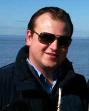

Sobre
VISÃO GERAL
O Laboratório de Engenharia do Meio Ambiente (LEMA) é um órgão do Centro de Tecnologia dedicado ao ensino de graduação e pós-graduação,
pesquisas de impacto regional, nacional e internacional, além de projetos de extensão em parceria com órgãos públicos e privados.
As atividades do LEMA são relacionadas aos diversos compartimentos do meio-ambiente, sendo que as águas subterrâneas e superficiais, o solo e a vegetação merecem destaque. O LEMA realizada estudos que visam avaliar e compreender o impacto das atividades humanas na qualidade e na quantidade dos recursos naturais disponíveis. Busca, ainda, propor alternativas inovadoras que diminuam o impacto das ações antrópicas no meio-ambiente e contribuam para o desenvolvimento sustentável.
As atividades do LEMA são relacionadas aos diversos compartimentos do meio-ambiente, sendo que as águas subterrâneas e superficiais, o solo e a vegetação merecem destaque. O LEMA realizada estudos que visam avaliar e compreender o impacto das atividades humanas na qualidade e na quantidade dos recursos naturais disponíveis. Busca, ainda, propor alternativas inovadoras que diminuam o impacto das ações antrópicas no meio-ambiente e contribuam para o desenvolvimento sustentável.
ESTRUTURA
(Clique sobre a opção desejada)
-
Setor de Análises Físico-Químicas
- O Setor de Análises Físico-Químicas realiza ensaios em águas subterrâneas e superficiais, efluentes domésticos e industriais, divididos em 4 categorias:
- a) Parâmetros Gravimétricos: Determinação de sólidos totais, sólidos dissolvidos totais, sólidos suspensos totais, sólidos fixos e voláteis e sólidos sedimentáveis.
- b) Parâmetros Físicos: Determinação da temperatura, pH, cor, turbidez e condutividade.
- c) Parâmetros Químicos Titulométricos: Determinação da DQO (demanda química de oxigênio), acidez, alcalinidade e dureza.
- d) Parâmetros Químicos Cromatográficos: Determinação de fluoreto, cloreto, brometo, nitrito, nitrato, fosfato e sulfato via cromatografia iônica.
-
Setor de Microbiologia
- O Setor de Microbiologia realiza os seguintes ensaios em águas subterrâneas e superficiais, efluentes domésticos e industriais: Determinação da DBO (demanda bioquímica de oxigênio), determinação de coliformes totais e determinação de coliformes termotolerantes.
-
Setor de Processos
- O Setor de Processos destina-se a investigação de parâmetros de controle em operações unitárias visando, principalmente, o tratamento de águas, efluentes líquidos e lodos industriais. O laboratório possui equipamentos de separação de fases (sedimentação, filtração, osmose reversa, flotação a ar dissolvido) em regimes contínuo e descontínuo. O laboratório possui capacidade para estudos de transferência de fase em regime contínuo e descontínuo para polimento de efluentes industriais; estudos de oxidação química via Processos Oxidativos Avançados (incluso reator para fotólise); e estudos de adensamento e tratamento de lodos.
-
Setor de Hidrometria e Hidrossedimentometria
- As atividades realizadas no Setor de Hidrometria e Hidrossedimentometria envolvem as medições de vazões líquidas para estabelecimento da curva chave, além do monitoramento da precipitação, nível de água, descarga e concentração de sólidos em suspensão. As medições de descarga líquida são realizadas com o método volumétrico, flutuadores, dispositivos regulares (vertedores e calhas), molinetes hidrométricos e equipamentos acústicos. As descargas sólidas são estimadas por meio de coletas em campo com amostradores de sedimentos e análises laboratoriais destas amostras.
-
Setor de Mecânica dos Fluidos e Hidráulica
-
O Setor de Mecânica dos Fluidos e Hidráulica conta com um reservatório de 130 m³ que abastece um circuito
fechado para escoamento em canal. Conta também com caixas calibradas e canais de retorno. O canal tem
capacidade de circulação de uma vazão de até 1 m³.s-1, com medição feita através de vertedouro e de até 0,5 m³.s-1,
com medição volumétrica de vazão na caixa calibrada.
Atualmente encontra-se com o canal e as caixas calibradas em operação, equipado com bomba IMBIL, tipo 250 290, 1750 RPM, vazão: 300 m³.h-1 e inversor de frequência que possibilita o seu funcionamento com diferentes vazões.
O laboratório conta ainda com bancadas para ensaio de bombas centrífugas, Turbinas Pelton e Francis, e de turbina tipo Hélice Reversível (água), para estudo de perda de carga em líquidos em movimento (água) e de Hidráulica; condutos forçados e canais (água).
-
O Setor de Mecânica dos Fluidos e Hidráulica conta com um reservatório de 130 m³ que abastece um circuito
fechado para escoamento em canal. Conta também com caixas calibradas e canais de retorno. O canal tem
capacidade de circulação de uma vazão de até 1 m³.s-1, com medição feita através de vertedouro e de até 0,5 m³.s-1,
com medição volumétrica de vazão na caixa calibrada.
-
Setor de Logística
- O Setor de Logística objetiva assessorar e viabilizar as atividades de coletas e de deslocamento de equipamentos, alunos e funcionários no trabalho de campo, ou seja, em áreas externas ao LEMA. Atualmente este setor possui dois veículos, uma Fiat Doblô com capacidade para 7 pessoas e uma Wolksvagem Kombi, com capacidade de transportar até 8 pessoas, além de um barco de alumínio com motor de 15 hp e um reboque para auxílio no transporte de equipamentos.
-
Setor de Geoprocessamento
- O Setor de Geoprocessamento realiza atividades junto a entidades públicas e privadas, estudos e soluções de questões técnicas na área de engenharia do meio ambiente, tais como: levantamentos topográficos, desenvolvimento de sistemas de informações geográficas e aplicação de ferramentas de análise espacial para os mais diversos problemas ambientais.
-
Setor de Ecotecnologias e Instalações Prediais
- O Setor de Ecotecnologias e Instalações Prediais se destina ao desenvolvimento de atividades voltadas às tecnologias inovadoras, com vistas à sustentabilidade em áreas urbanas e rurais, incluindo a infraestrutura verde (telhados verdes, biorretenções, pavimentos permeáveis, brises vegetais, entre outros) com foco no controle do escoamento pluvial, conforto térmico e acústico, além de técnicas para a captação, aproveitamento e tratamento das águas da chuva, utilização de resíduos para a produção de novos materiais e utilização de fontes energéticas alternativas.
-
Setor de Gestão dos Recursos Hídricos
- O setor de Gestão dos Recursos Hídricos realiza atividades junto a entidades públicas e privadas, estudos e soluções de questões técnicas na área de engenharia do meio ambiente, tais como: aplicação e desenvolvimento de metodologias para os instrumentos de gestão de recursos hídricos: Planos de Recursos Hídricos; Enquadramento dos corpos de água; Outorga dos direitos de uso de recursos hídricos; Cobrança pelo uso de recursos hídricos; e Sistema de Informações sobre Recursos Hídricos.
RECURSOS HUMANOS
(Clique sobre a opção desejada)
- Direção do LEMA
- Setores de Análises Físico-Químicas, de Microbiologia e de Processos
-
Setores de Mecânica dos Fluidos e Hidráulica, de Hidrometria e Hidrossedimentometria e de Logística
- Prof. João Francisco Carlexo Horn - Gerente Técnico (Lattes)
- Técnico Fabio Sebastian Oliveira França - Gerente Técnico Substituto
- Setores de Geoprocessamento, de Ecotecnologias e Instalações Prediais e de Gestão dos Recursos Hídricos

LOCALIZAÇÃO
O Laboratório de Engenharia do Meio Ambiente (LEMA) está localizado no Campus Sede da Universidade Federal de Santa Maria
(UFSM), em Santa Maria - RS.
Endereço do LEMA:
Av. Roraima nº 1000
Prédio 10 – Sala 442
Cidade Universitária
Santa Maria - RS
CEP: 97105-900
O mapa abaixo mostra a localização do LEMA no campus da UFSM, em relação a prédios de referência como o Hospital Universitário (HUSM), Centro de Tecnologia (CT), Instituto Nacional de Pesquisas Espaciais (INPE) e Banco do Brasil (BB)
Endereço do LEMA:
Av. Roraima nº 1000
Prédio 10 – Sala 442
Cidade Universitária
Santa Maria - RS
CEP: 97105-900
O mapa abaixo mostra a localização do LEMA no campus da UFSM, em relação a prédios de referência como o Hospital Universitário (HUSM), Centro de Tecnologia (CT), Instituto Nacional de Pesquisas Espaciais (INPE) e Banco do Brasil (BB)